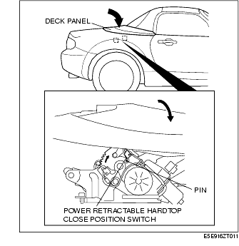

Technical Guide ➭ BODY & ACCESSORIES ➭ EXTERIOR TRIM ➭ POWER RETRACTABLE HARDTOP SYSTEM OPERATION
POWER RETRACTABLE HARDTOP SYSTEM OPERATION
id091600101300
{: #wp1059776}
Operation Conditions
• The power retractable hardtop operates when all of the following conditions are met.
- Ignition switch is in the ON position. {: #wp1059800}- The trunk lid is in the fully closed position. {: #wp1059814}- The selector lever is in the P or N position (AT). {: #wp1059824}- The shift lever is in the neutral position (When the neutral switch is ON) (MT). {: #wp1059834}- The vehicle speed is 3 km/h {1.86 mph} or less. {: #wp1059844}- The power supply voltage is between 8.5 to 16.5 V. {: #wp1059869}- The top lock switch is unlocked.
Power Retractable Hardtop Operation
Open operation timing chart
• Pauses depending on the operation the same as the close operation timing chart.
Open operation
-
When the power retractable hardtop open switch is turned on with all the power retractable hardtop operation conditions met, the power retractable hardtop open request signal is sent to the power retractable hardtop control module.
-
The power retractable hardtop control module confirms the operation conditions when it receives the signal, and if all the conditions are met, it sends an operation start beep signal to the instrument cluster.
-
The window glass open request signal is sent to the power window main switch.
-
When the door glass lowers approx. 100 mm, the deck panel motor operates and the deck panel moves in the open direction.
-
When the deck panel link pin contacts the deck panel open position switch and the switch is turned on, the deck panel is determined to be fully open and the deck panel motor stops.{: #wp1059990}

-
The roof panel motor operates and the roof panel moves in the open direction.
-
When the roof panel link pin contacts the power retractable hardtop open position switch and the switch is turned on, the roof panel is determined to be fully open and the roof panel motor stops.{: #wp1060027}

-
The deck panel motor operates and the deck panel moves in the close direction.
-
Because link A rotates in the direction of the arrow due to the deck panel motor rotation, the roof hook cable is pulled and the roof hook is locked.
-
When the deck panel link pin contacts the deck panel close switch and the switch is turned off, the deck panel is determined to be fully closed and the deck panel motor stops.{: #wp1060074}
- When the power retractable hardtop open operation is finished, an operation finish beep signal is sent to the instrument cluster.
Close operation timing chart
Close operation
-
When the power retractable hardtop close switch is turned on with all the power retractable hardtop operation conditions met, power retractable hardtop close request signal is sent to the power retractable hardtop control module.
-
The power retractable hardtop control module confirms the operation conditions when it receives the signal, and if all the conditions are met, it sends an operation start beep signal to the instrument cluster.
-
The window glass open request signal is sent to the power window main switch.
-
When the door glass lowers approx. 100 mm, the deck panel motor operates and the deck panel moves in the open direction.
-
Because link A rotates in the direction of the arrow due to the deck panel motor rotation, the roof hook cable loosens and the roof hook is unhooked.
-
When the deck panel link pin contacts the deck panel open position switch and the switch is turned on, the deck panel is determined to be fully open and the deck panel motor stops.{: #wp1060198}
-
The roof panel motor operates and the roof panel moves in the close direction.
-
When the roof panel link pin contacts the power retractable hardtop close position switch and the switch is turned on, the roof panel is determined to be fully closed and the roof panel motor stops.{: #wp1060235}
-
The deck panel motor operates and the deck panel moves in the close direction.
-
When the deck panel link pin contacts the deck panel close switch and the switch is turned off, the deck panel is determined to be fully closed and the deck panel motor stops.{: #wp1060272}

- When the power retractable hardtop close operation is finished, an operation finish beep signal is sent to the instrument cluster.